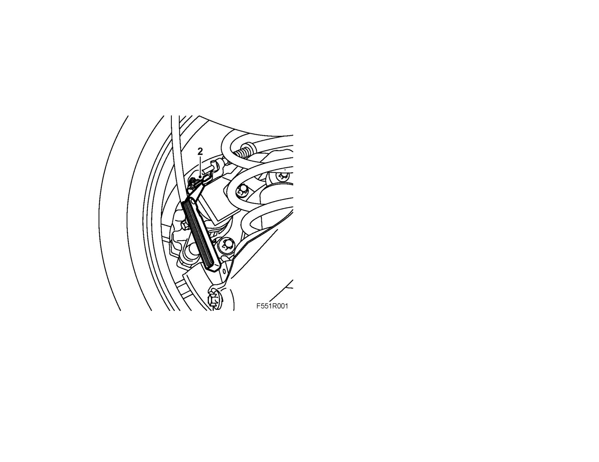
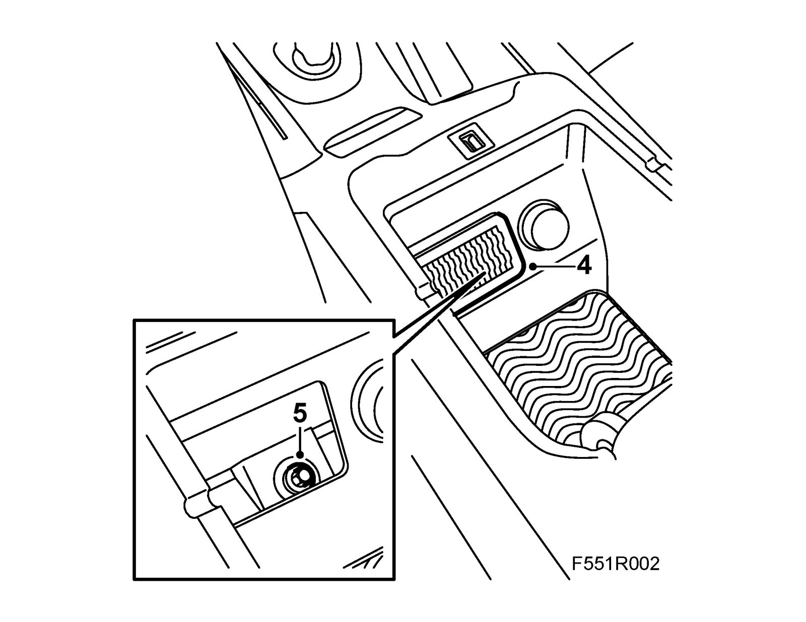

Parking Brake Cable: Adjustments
Adjusting the Handbrake cable1. Apply the Handbrake in order to stretch the cables. Release the lever to its lowermost position.
Raise the car.
2. Check the distance between the lever and the stop. It should be about 1 mm.
If it is not 1 mm: Place a 1.0 mm feeler gauge between the lever and the stop on the brake caliper on each side.

3. Lower the car slightly.
4. Open the armrest lid.
Remove the coin holder.

5. Tighten the adjusting nut until the feeler gauge comes loose from the brake caliper.
6. Fit the coin holder and close the lid.
7. Press hard on the brake pedal three times.
8. Apply the Handbrake and check that it brakes on both wheels.
9. Release the Handbrake and check that both wheels rotate freely.
10. Lower the car.